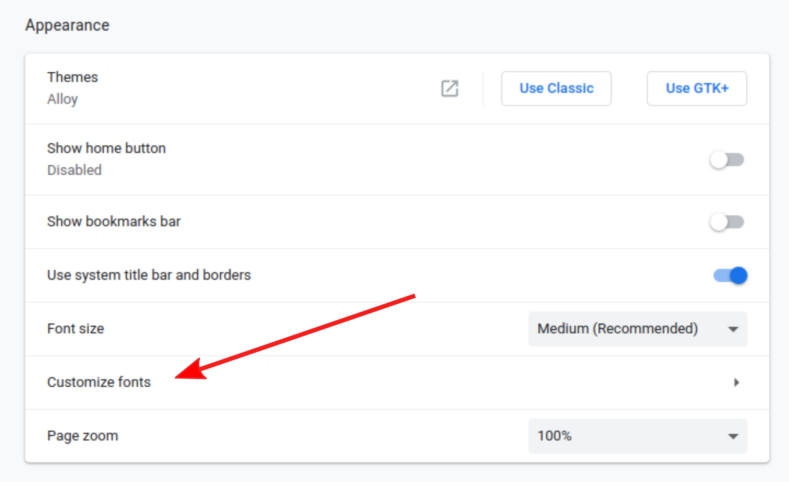
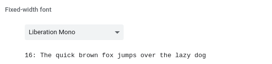
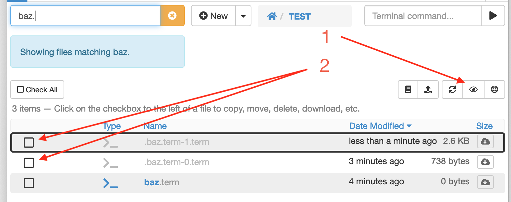

Linux Terminal
The CoCalc Linux Terminal lets you run programs online in a Linux environment. Everything runs remotely inside a project, the ongoing terminal session is synchronized with your collaborators, and all your files are backed up.

Terminal Tour
You can launch a short introduction to CoCalc’s support for the Linux terminal by clicking the blue Tour button at upper right after opening a .term file. This is one of several Tours of features in CoCalc.
terminul tour
Quickstart
Note
To get started, create a “Terminal” file in the “Files” listing or in “+ New”.
Such files end in .term and open up in a Frame Editor.
Inside of each panel a terminal session starts up and you can issue commands.
New to Linux?
The terminal is a way to interactively communicate with the computer.
You type in a so-called “command” and then hit the Return-key to send your instruction.
This causes bash, the default interpreter, to process your command and most likely run a program.
You then see the output of that program as the result.
After it finished, you see the prompt again and you can type in the next command.
You can interrupt a program being stuck by pressing Ctrl+c:
this sends an “interrupt” signal to the running process.
Find out more about the Linux command line at the Linux Tutorial, which is one of several introductory topics at Ryan’s Tutorials.
Installing software packages
You can use the terminal to install software packages in your project.
To install certain Python or Anaconda packages, please consult Python “user” installs.
Installing R packages locally in your project is covered here: Install R Packages.
It is also possible to install LaTeX packages.
Features
Extensive Command Set
In addition to the usual commands available at user level in Ubuntu Linux, there are command line programming interfaces for sage, python2 / ipython2, python3 / ipython3, R, gap, java, julia, octave and many more. There is an extensive list of added executables at the CoCalc installed software list.
CoCalc Terminal Commands
The Linux shell in CoCalc projects has access to commands specifically intended for the CoCalc project environment. These include:
open <filename>The “open” command from a terminal will cause the CoCalc UI to open a tab for the file requested. If a tab is already open, browser focus will switch to that file. You can open multiple files with a single command, e.g.
``open file1 file2 file3``. The file is opened in an environment that matches the file type. For example,.ipynbfiles are opened as Jupyter notebooks,.sagewsfiles are opened as Sage worksheets, and.py,.R, and.cfiles are opened in the frame editor.
cc-ipynb2sagewsConvert Jupyter notebook to Sage worksheet. Enter the paths of one or more .ipynb files on the command line. Corresponding files with the same name, except with .sagews extension, will be created.
cc-sagews2ipynbConvert Sage worksheet to Jupyter notebook. Enter the paths of one or more .sagews files on the command line. Corresponding files with the same name, except with .ipynb extension, will be created.
Collaboration and Side Chat
Like any other application in CoCalc, the terminal environment allows more than one user to enter commands and view results in the same session. The terminal size will adjust according to the available number of rows and columns of each particiant. It also allows users participating in the same session to share comments by opening a chat for the terminal session by clicking the Chat icon at upper right.
Additionally, you can use the “open door” button to remove all other collaborators interfering with your current terminal session.
Disconnect and Resume
If you disconnect your browser from CoCalc while you have a terminal session open, the session is preserved as long as the project is not restarted. Next time you reconnect – even with a different browser or via another computer – a still running session will appear again and you can continue to work where you’ve left.
Multiple Terminals in a Single Browser Tab
Terminals open up in a Frame Editor. This means you can use buttons at upper right to split the terminal frame vertically or horizontally. The split defaults to the middle of the frame, but the dividing line can be dragged to give more space to one of the new frames and less to the other. You can continue splitting to get even more frames in a single browser tab. Click the x icon at upper left to close a frame.
Startup files
When you click on the “rocket” icon ( ),
a hidden file – which is tied to that specific terminal – is created.
It contains further instructions about how to configure commands that are run when it starts.
),
a hidden file – which is tied to that specific terminal – is created.
It contains further instructions about how to configure commands that are run when it starts.
Anaconda Environment
To use the Anaconda data science platform,
enter the command anacond2019 in a terminal session.
The shell prompt will change to notify you
that you’re now working in the default (“base”) anaconda environment.
To exit the anaconda platform and continue your terminal session,
use the command exit-anaconda.
Additionally, you can setup your own Anaconda environment inside your project, and even setup your own customized Jupyter Kernel for it.
Note: an older version of anaconda is temporarily available with the command anaconda5.
We recommend all new applications use anaconda2019.
Tips and tricks
Terminal Environment in Split Frame with File Editor
If you open a source code file in CoCalc for editing, for example an .sh, .py, .R, or .rb file, you can split the editor frame and add a command session. That way, you can easily move between editing and running the code.
Customize font
To change the size of the font, click the plus and minus magnification glass icons at the top of a focused terminal frame.
In order to change the appearance of the font family of the terminal, adjust the font settings of your web browser. For example, in Google Chrome this is done in Settings → Appearance → Customize Fonts:
Then select a different fixed-width font:
Broken VIM key bindings
If you have a browser extension that uses the vim keys it may intercept the ‘Esc’ character, preventing you from switching to command mode in CoCalc. Either remap ‘Esc’ to a different key for the browser extension or disable the extension on the cocalc.com domain.
Setup fish shell
You can automatically span a process replacing of the default bash shell while it starts
via a startup file.
In order to avoid having broken Home/End keys in the fish shell,
you have to set the TERM environment variable correctly to use xterm! I.e.
Click on the rocket-icon in a terminal
Add this to the setup file:
source ~/.bashrc export TERM=xterm-256color exec fish
Next time you launch this terminal, or restart it via typing in exit and pressing the return-key, this setup file will be evaluated and you’ll end up in the fish shell with the correct TERM environment variable set.
Remove history from a terminal file
Suppose you want to use a .term file, but want to remove previous history, comments, etc. In addition to deleting the contents of the .term file, you need to delete one or more hidden files. Click the little “hidden eye” icon in the upper right of the file listing to show hidden files. Then delete the hidden files that end in .term. They have the (recent) history of use of that terminal. If you delete them, then they are gone.
One reason this situation might arise is if you are an instructor in a course and want to distribute a .term file to your students using the Handouts or Assignments feature in CoCalc courses, but do not want to distribute command history that may have accumulated with the original terminal in the instructor’s project.

{kind=link}
{kind=link}
{kind=link}
{kind=link}
{kind=link}